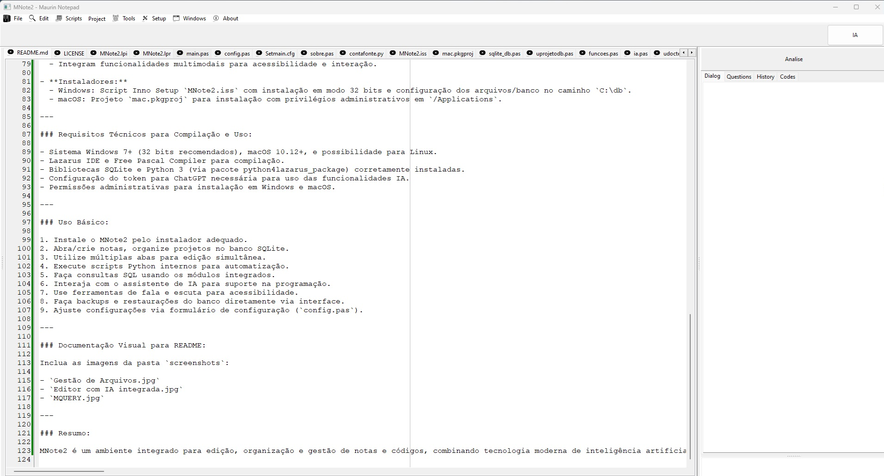
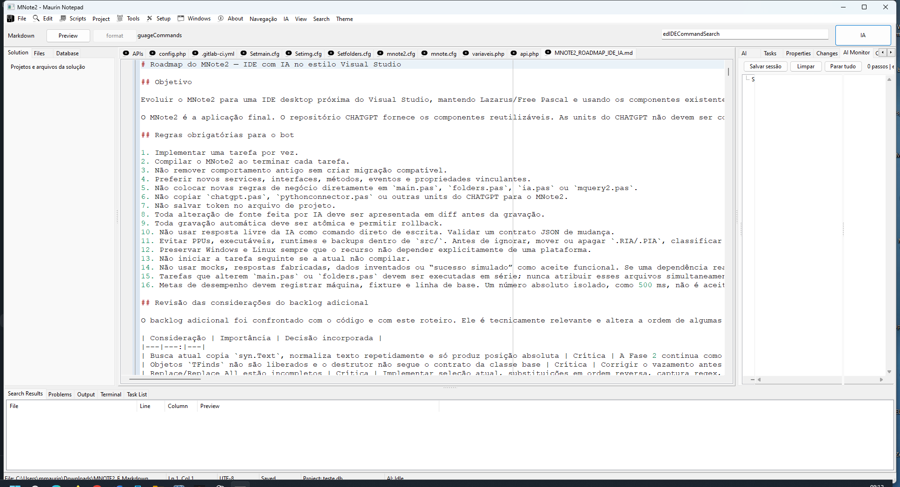
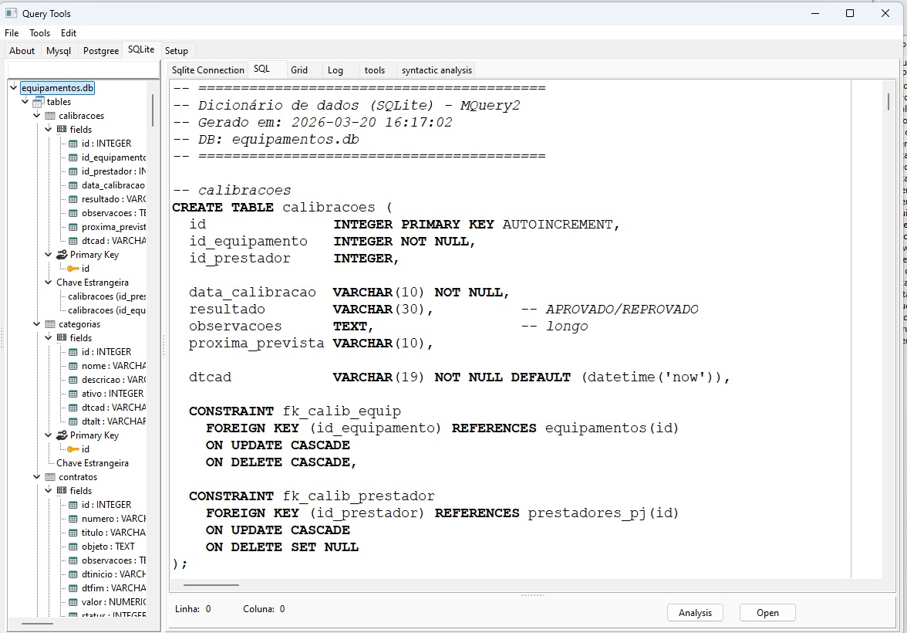
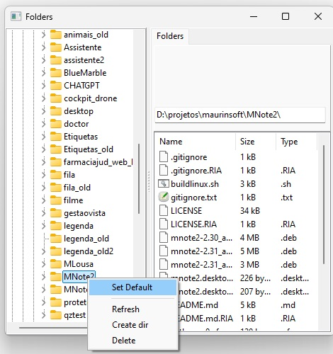
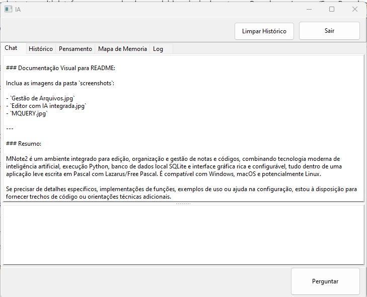

Ambiente de desenvolvimento integrado (IDE) ultraleve e responsivo, desenvolvido em Free Pascal e Lazarus. Reúne editor em abas com busca avançada UTF-8/Regex, gerenciador de banco de dados SQL MQuery2, módulo completo de gestão de projetos e tarefas com Gráfico de Gantt, e assistência multi-IA de última geração com ativação por comando de voz "OK MNote".
Projetada para desenvolvedores que buscam alta performance, inicialização instantânea e controle total do código sem a sobrecarga de memória das IDEs baseadas em Electron ou navegadores embutidos.
Área de trabalho com abas configuráveis, realce de sintaxe com perfis de temas customizáveis, Search & Replace UTF-8 com suporte completo a Regex, histórico de busca, backup atômico e rollback automático de edições.
Ctrl+Shift+P / Ctrl+Q)F12 e referências cruzadasMotor de inteligência artificial com 6 papéis especializados e roteador determinístico. Suporta entrada digitada e comando de voz contínuo via "OK MNote" com retorno falado por síntese e registro de texto no chat.
neural-apiConexão nativa e simultânea com bancos de dados SQLite e PostgreSQL. Árvore de navegação por bancos, esquemas e tabelas com editor SQL dedicado, execução de scripts e visualização de conjuntos de dados.
Gerenciamento de desenvolvimento integrado ao código. O desenvolvedor planeja seus sprints, prioridades e riscos sem precisar de ferramentas web externas que desconectam o programador do fonte.
Painel inferior com abas de Problems para salto direto à linha de erro, Output separado por canais de processo, Terminal de linha de comando embutido e esteira de testes contínuos automatizados.
A IA nunca executa comandos diretamente na máquina do desenvolvedor. Leitura de arquivos, compilação e alteração de código fonte exigem permissões explícitas com visualização prévia de diffs.
mnote.cfg)Conheça as telas reais de operação do MNote2 em projetos de engenharia de software e análise de banco de dados.





Executáveis compilados nativamente para Windows 64 bits e pacotes Debian/Ubuntu para arquiteturas x86_64 e ARM64.
Instalador completo gerado com InnoSetup contendo executável binário, bibliotecas SQLite e temas.
Acessar Instalador Windows →
Pacotes .deb prontos para instalação em sistemas Debian, Ubuntu, Mint (x86_64 e ARM64).
Repositório oficial no GitHub com código Pascal/Lazarus, documentação técnica, testes e scripts de build.
Repositório marcelomaurin/MNote2 →